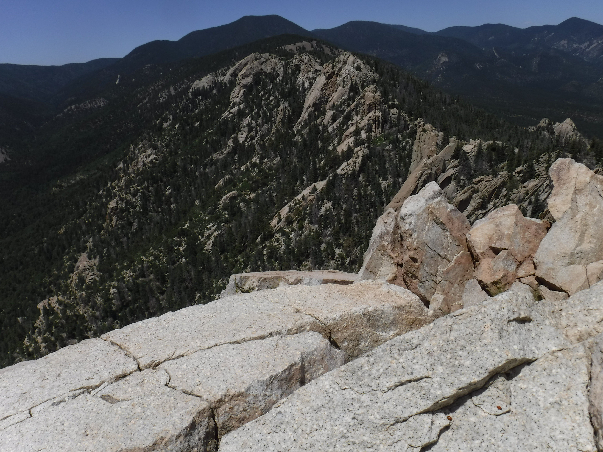

Locations
This section features all of the different places I have photographed and the different projects I have worked on. The upper section will feature different locations I have photographed in chronological order. The lower section features projects I worked on for either for my digital photography class or for personal projects.
Cancún, Mexico (2017)
My family's trip to Mexico was one of the first trips that I really started taking pictures. Although there weren't many images I was able to pull from that trip that were worth sharing, these photos show some of my earliest pictures I could be proud of.

Massawepie, Tupper Lake, NY (2018)
Massawepie is the camp I attend every summer for two weeks and is located in the heart of the Adirondacks. While 2018 was my fifth year at camp, this was one of the first time I really started getting into photographing the natural beauty of the Adirondacks.
Boston, MA (2018)
Even though I've grown up just outside of NYC, Boston has always held a special place in my heart. As mentioned in my 'About' section, my dad grew up in Massachusetts and as a fan of all the Boston sports teams, so naturally, I grew up a fan of the Boston sports teams as well. While I have been able to visit Boston many times over my life, this was the first time I got to photograph the city, and was one of my first times trying out city/street photography.
London, United Kingdom (2018)
It is a long-standing tradition on my dad's side of the family (with my 17 cousins, 6 aunts, and 5 uncles) to visit one of my Aunts (one who has spent a good portion of her life traveling and has lived in many different places over her lifetime) when you turn 13. While there were several year's worth of delays for this trip, I was finally able to visit my aunt, with my brother and one of my cousins, just before turning 16, and got to explore the city of London for four days. I got the full London experience, seeing Buckingham Palace, going on the London Eye and Tower Bridge and going to a Premier League game. For some reason at this point in my photography journey I thought the peak of photographic style was taking pictures of everything at about a 30 degree angle, so every single picture I took on this trip was taken with the exact same slight rotation to it (it's fairly noticeable here, but even more apparent when you look at the full collection of every picture I took on this trip.
Spain (2019)
Traveling in Europe gave me a big chance to work more on my street photography. Specifically in Spain, I did lots of photography of graffiti and cars, and got to experiment a lot with photographing different colors.
Italy (2019)
While Italy holds many similarities to several other European countries I've been to, there is just something that's different about Italy. It's quite hard to articulate, but when I was exploring Cagliari with my family, I could just tell there was a different feeling in the air. The biggest noticable difference was in the food. Even a standard bakery on any random street was world-class, and yet could've been just any other bakery in Italy.
Malta (2019)
Despite getting to see Malta for less than a day, it is one of the most spectacular places I have ever visited. To the castle-like structures, the beautiful water, or the ancient looking houses and streets. I probably took more pictures in this micro-country than possibly any other place I've ever photographed.
Greece (2019)
While I wasn't able to spend that much time in Greece due to the timing of our flight home in the time we spent there, I was able to go on a tour bus of the city with my family, and even got to visit the Greek National Football Museum, which is a rather unspectacular looking building, but the guide inside was fantastic and let me take pictures with signed and game-worn jerseys from some of the best players of all time (Lionel Messi, Pele, Johan Cruyff, and more).
Twin Cities, MN (2019)
Perhaps it's because I'm used to the regular hustle and bustle of New York City, but Minneapolis and St. Paul were far from what I expected. That's not to say they weren't nice cities by any means, but I was a little underwhelmed, expected a more packed and busy city than the one I was greeted with. However, what it lacked in size and people in picked up in charm. One of my favorite moments from this trip was getting to play chess with a random person outside Nicollet Mall.
Philmont Scout Ranch, Cimarron, NM (2019)
Philmont is known as 'Scouting Paradise' and is truly a magical place. I was able to do a 12-day backpacking trek in the New Mexico backcountry, with some of my closest friends in the world. While I wasn't able to bring along my standard DSLR, I grabbed a point and shoot and was still able to get some of my favorite pictures to date and be able to capture just a fraction of the extraordinary place that is Philmont. As part of our trip, we also spent two days in Colorado Springs before driving down to Cimarron to get used to the increased altitude, and I was able to get some photos there as well, specifically near the Red Rock Ampitheather and the Air Force Academy.



New York City, NY (2019)
New York City is one of my favorite cities in the world, and his virtually anything you would look for in a city. As a kid I would often spend many Saturdays in the city getting to try out all sorts of things, and due to it's proximity, as I've gotten older I've been able to go with my friends as well and explore parts of the city for myself. Last year before the first day of school I went to the city with a couple of my friends and was able to capture some of the city.
Massawepie, Tupper Lake, NY (2019)
I wouldn't know it at the time (thank you COVID-19), but this would be my last ever time at camp. At this point I had fine tuned a lot of my photography skills, and began to do more experimental photography. I still took my standard nature/adirondack mountain photos, but also tried out some experimental stuff with shutter speeds and different lights tricks as well.
Roscoe, NY (2020)
Roscoe is a tiny hamlet in the Catskills region of New York. I was able to capture a week's worth of adventures with my friends with my camera and get to live a slowed down life for a week in out of our hectic worlds. This is also where I was able to snap the photo that now serves as the main image of this website (the red mustang on the home page, which I found just sitting in an empty field).
Thornton, NH (2020)
Thornton had very similar vibes as Roscoe, although it was more populated and less isolated from society, and we were able to try out some of the local food, and I was able to try some New England lobster rolls more than once. While there, we were able to do some hiking, visit a local college campus, and explore the iconic Castle in the Clouds (where most of these pictures were taken).